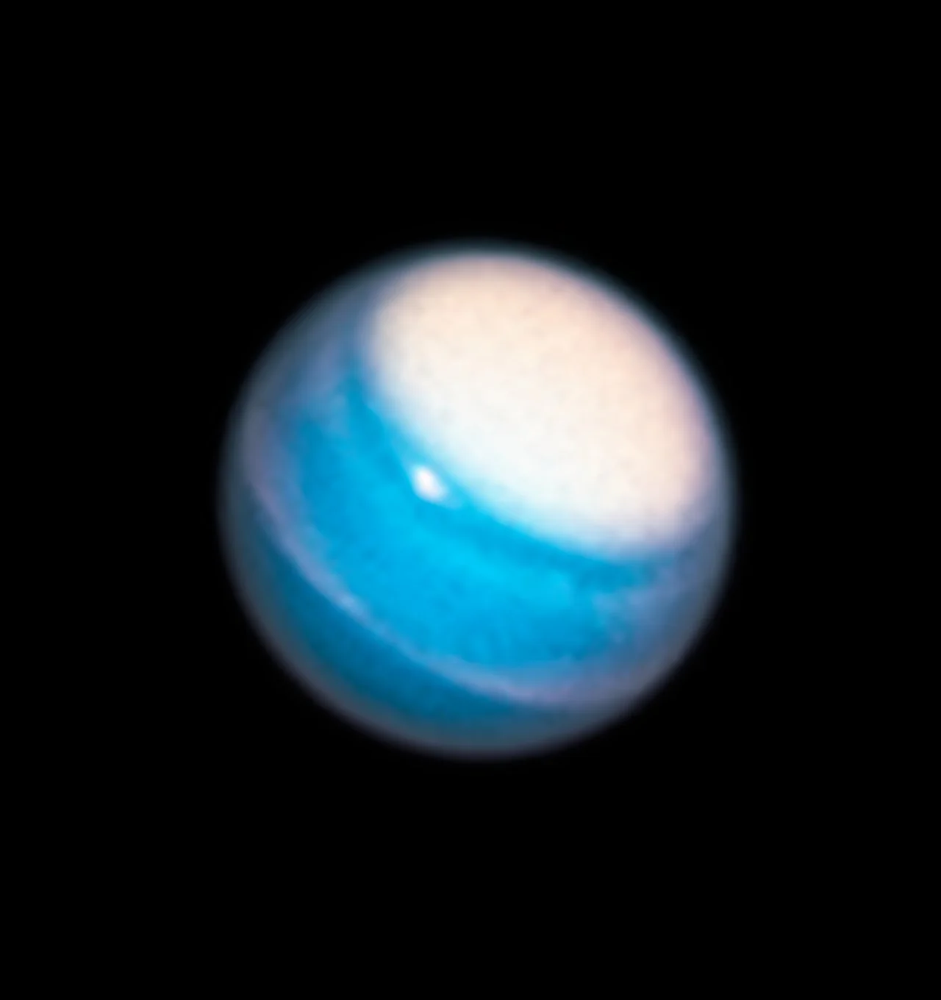

Our Solar System
Uranus: the tilted ice giant
Uranus is an ice giant with 4.0 Earth radii and 14.5 Earth masses. It orbits the Sun in 83.7 years at 19.2 AU; its mean temperature is −195 °C. Its axis is tilted by 97.8 degrees, so that it orbits as if lying on its side. Methane in the atmosphere gives it a blue-green color, and 13 faint rings surround it.
Uranus and Neptune define the class of Neptune-like exoplanets: planets of similar size with atmospheres dominated by hydrogen and helium. Both are called “ice giants” because they contain water, ammonia and methane – substances that are usually frozen in the cold outer Solar System.
Moons: Uranus has 29 recognized moons (as of August 2026). The five major ones are Miranda, Ariel, Umbriel, Titania and Oberon; the moons of Uranus take their names from characters in plays and poems by William Shakespeare and Alexander Pope. Titania and Oberon were discovered by William Herschel in 1787, Miranda by Gerard Kuiper only in 1948. The inner moons seem to consist of water ice and rock in about equal parts.
Sources: NASA (NSSDCA): "Planetary Fact Sheet – Metric.", accessed 2026-11-20; NASA (NSSDCA): "Planetary Fact Sheet – Ratio to Earth Values.", accessed 2026-11-20; NASA Science: "Uranus: Facts.", accessed 2026-11-20; NASA Science: "Uranus Moons.", accessed 2026-11-20; NASA Science: "Uranus Moons: Facts.", accessed 2026-11-20; NASA/JPL Solar System Dynamics: "Planetary Satellite Discovery Circumstances.", accessed 2026-11-20; NASA Science: "What Are Neptunian Planets?", accessed 2026-11-20; NASA Science: "Exoplanets – Planet Types: Overview.", accessed 2026-11-20